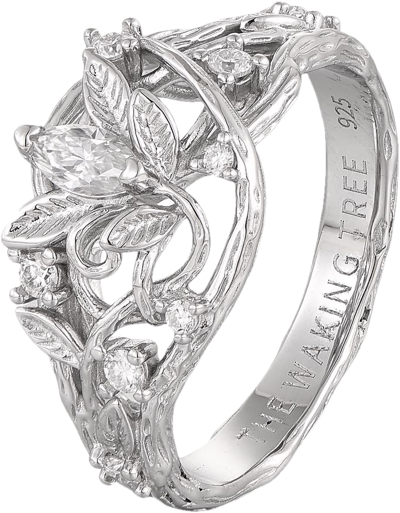

It started as an idea.

a tree that woke up.
From an idea to something
you can actually wear.
So proud of
my best friend.
Totally obsessed.
So beautiful.
— Ana
The Waking Tree
A reminder you can do anything.
EVERLORE
Back it on Kickstarter
everlore.ca/ks